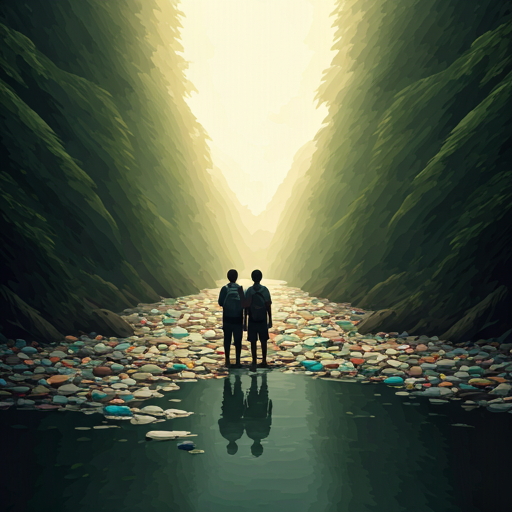
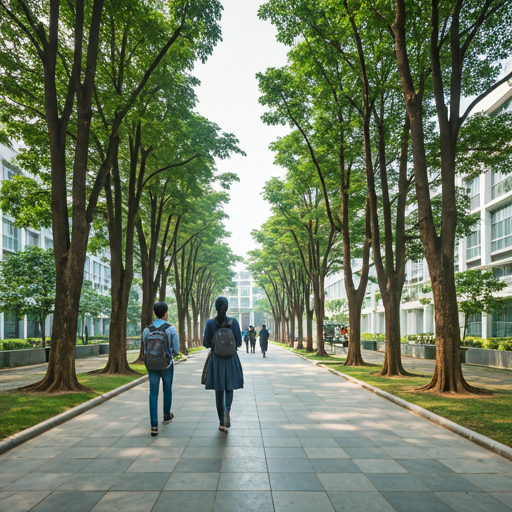
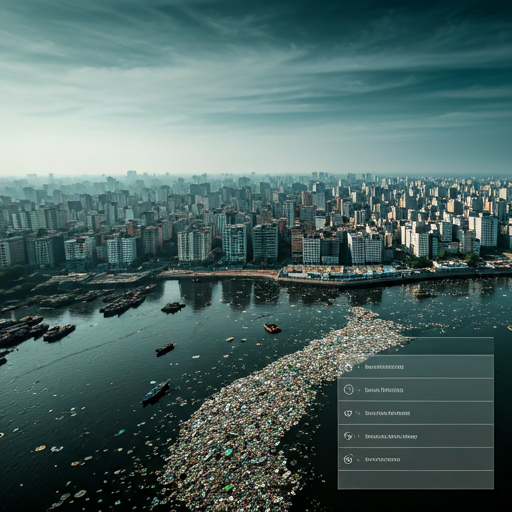
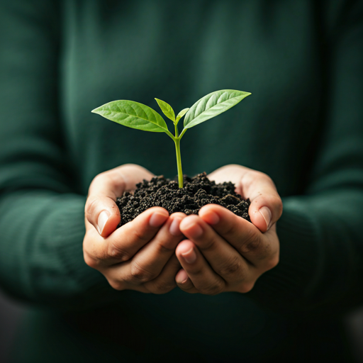

Punosristi is on a mission to transform Bangladesh's plastic waste crisis into a sustainable, rewarding ecosystem through smart technology and community action.

It started with a simple observation on the grounds of Independent University, Bangladesh. Every day, countless plastic bottles were discarded, destined for overflowing landfills or to choke our vital waterways.
We realized that plastic isn't just waste; it's a misplaced resource. The missing link was motivation. We needed a system that didn't just ask people to recycle, but rewarded them for doing the right thing.
That realization sparked the creation of Punosristi. We set out to design smart Reverse Vending Machines (RVMs) tailored for the Bangladeshi context—accessible, reliable, and deeply integrated into the daily lives of students and citizens.

Bangladesh faces an unprecedented challenge with plastic pollution. Conventional waste management is struggling to keep up.
Tons of plastic end up in the Bay of Bengal annually from Bangladesh.
Tons of plastic waste generated daily in urban areas alone.
Of all plastic waste is currently collected and recycled properly.
Our RVMs utilize advanced AI vision to accurately identify and sort PET plastics, ensuring high-quality material recovery and preventing contamination.
Users earn points for every bottle recycled. These points translate into tangible rewards—mobile top-ups, discounts, or donations to local causes.
We create a circular economy by selling high-grade recycled plastic flakes to manufacturers, funding the rewards and expanding our network.
A dedicated team of innovators, engineers, and environmentalists.
Co-Founder & CEO
Co-Founder & COO
Co-Founder & CTO
We prioritize the health of our planet above all, striving for zero waste and clean waterways.
Constantly improving our tech for better efficiency.
Empowering local citizens to be the heroes of recycling.
Clear tracking of impact, rewards, and material processing.
Initial machine builds and AI model training at IUB.
Deploying the first 10 units across major Dhaka universities.
Partnering with supermarkets and transit hubs.
Scaling to Chittagong, Sylhet, and beyond.

Every bottle recycled is a step towards a cleaner Bangladesh. Join us in recreating our future.